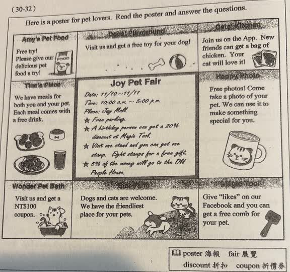
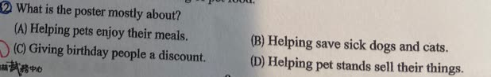

分享原卷｜第32題
完整原題
作答所需文章／材料
Here is a poster for pet lovers. Read the poster and answer the questions. Joy Pet Fair Date: 11/10–11/11 Time: 10:00 a.m.–5:00 p.m. Place: Joy Mall ★ Free parking. ★ A birthday person can get a 20% discount at Magic Tool. ★ Visit one stand and you can get one stamp. Eight stamps for a free gift. ★ 5% of the money will go to the Old People House. 【Amy's Pet Food】 Free try! Please give our delicious pet food a try! 【Dogs' Playground】 Visit us and get a free toy for your dog! 【Cats' Kitchen】 Join us on the App. New friends can get a bag of chicken. Your cat will love it! 【Tina's Place】 We have meals for both you and your pet. Each meal comes with a free drink. 【Happy Photo】 Free photos! Come take a photo of your pet. We can use it to make something special for you. 【Wonder Pet Bath】 Visit us and get a NT$100 coupon. 【Star Farm】 Dogs and cats are welcome. We have the friendliest place for your pets. 【Magic Tool】 Give “likes” on our Facebook and you can get a free comb for your pet. 【原卷字詞】poster 海報；fair 展覽；discount 折扣；coupon 折價券。What is the poster mostly about?
(A) Helping pets enjoy their meals.
(B) Helping save sick dogs and cats.
(C) Giving birthday people a discount.
(D) Helping pet stands sell their things.
先想一想，再查看答案、解說與原圖
原卷作答：A（原卷紅筆訂正D）
正確答案：D。整張海報介紹寵物展及多攤位活動，主要為攤位商品與服務宣傳。
逐項解析
| 選項與原句 | 判讀 | 句意與判斷理由 |
|---|---|---|
| (A) Helping pets enjoy their meals. | 不選 | 寵物餐點只是部分攤位內容。 |
| (B) Helping save sick dogs and cats. | 不選 | 海報不是治療或救援生病貓狗的公告。 |
| (C) Giving birthday people a discount. | 不選 | 生日折扣只是眾多活動之一。 |
| (D) Helping pet stands sell their things. | 應選 | 整張海報介紹寵物展及多攤位活動，主要為攤位商品與服務宣傳。 |
詳細說明與解題步驟
【海報完整中譯】
喬伊寵物展：11月10日至11日，上午10點到下午5點，地點是Joy Mall。免費停車；壽星在Magic Tool可享20%折扣，也就是付原價80%；逛一個攤位可得一章，八章換一份免費禮物；收入的5%給老人之家。
Amy's Pet Food：歡迎免費試吃美味寵物食品。
Dogs' Playground：來訪可為狗狗得到免費玩具。
Cats' Kitchen：加入App的新朋友可得一包雞肉，貓咪會喜歡。
Tina's Place：提供主人及寵物的餐點，每餐附免費飲料。
Happy Photo：免費替寵物拍照，還能用照片製作特別物品。
Wonder Pet Bath：來訪可得新臺幣100元折價券。
Star Farm：歡迎貓狗，提供對寵物友善的地方。
Magic Tool：在Facebook按讚可為寵物得到免費梳子。
各種贈品仍有海報所寫的條件；有附贈品，不代表每項商品本身都免費。
【題意與主旨】
問海報主要在介紹什麼。八個攤位提供寵物食品、玩具、餐飲、照片商品等，並以優惠吸引參觀，D最能概括全張海報。mostly是主要地，不能只看餐點或壽星折扣的一角。B雖提到sick，但海報沒有為病犬病貓募款救援；5%收入給的是老人之家。
核對註記：已依原卷或完整文字核對並獨立解題；對應教材課次未確認，歸綜合。
原圖（僅本題）

